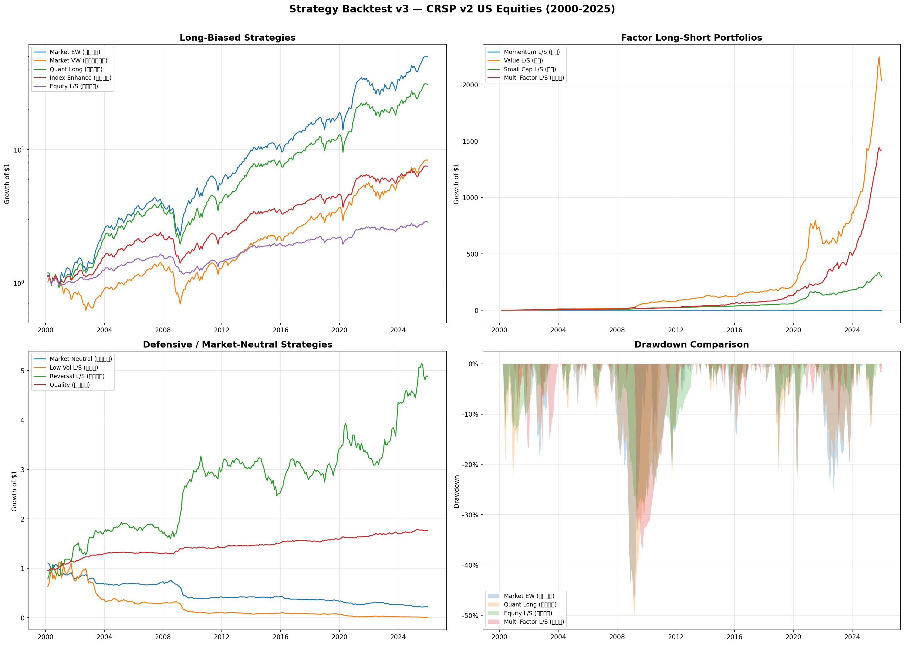
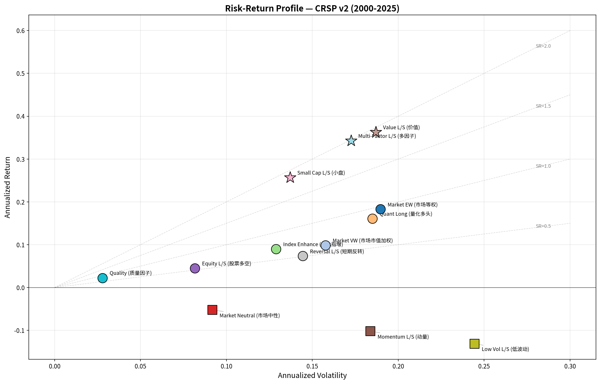
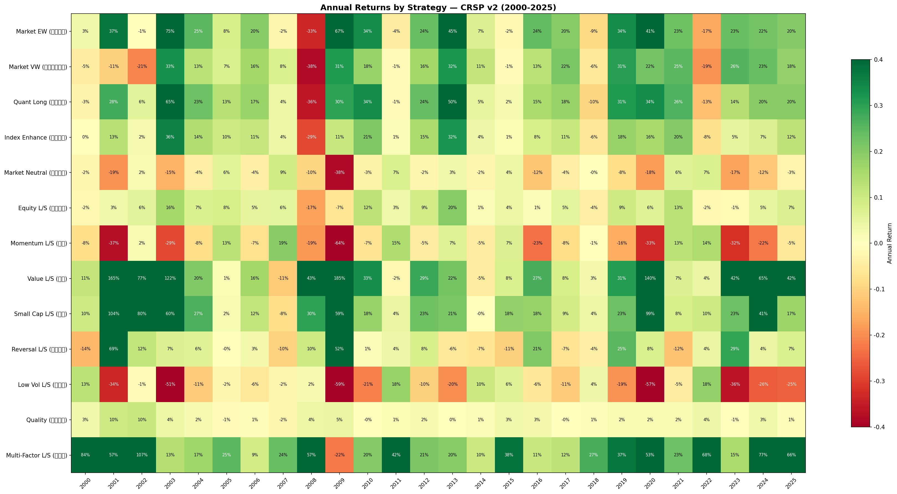
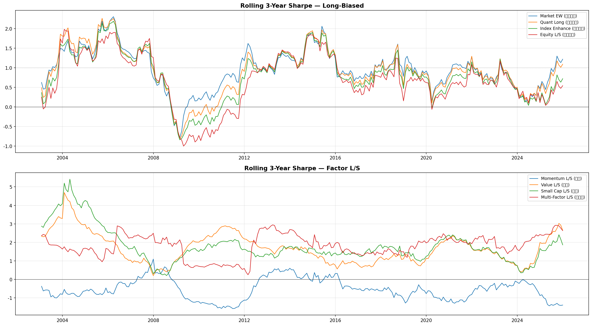
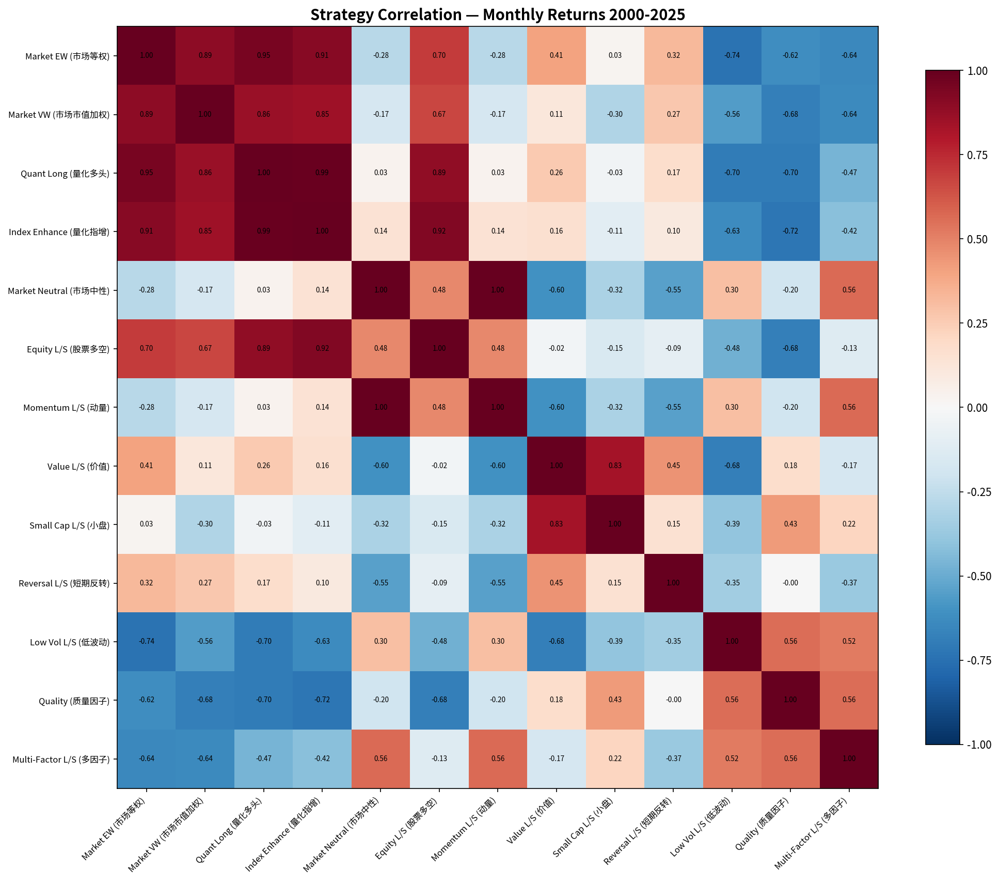

| # | Strategy | Return | Vol | Sharpe | Max DD | Calmar | Win % | Total |
|---|---|---|---|---|---|---|---|---|
| 1 | Multi-Factor L/S | 34.2% | 17.3% | 1.98 | −36.7% | 0.93 | 74.0% | 141,970% |
| 2 | Value L/S | 36.3% | 18.7% | 1.94 | −26.5% | 1.37 | 68.8% | 203,912% |
| 3 | Small Cap L/S | 25.7% | 13.7% | 1.87 | −20.0% | 1.28 | 70.4% | 29,723% |
| 4 | Market Equal-Weight | 18.3% | 19.0% | 0.97 | −48.3% | 0.38 | 64.6% | 4,848% |
| 5 | Quant Long | 16.1% | 18.5% | 0.87 | −50.4% | 0.32 | 65.3% | 2,988% |
| 6 | Quality | 2.3% | 2.8% | 0.81 | −2.8% | 0.80 | 57.6% | 76% |
| 7 | Index Enhancement | 9.0% | 12.9% | 0.70 | −41.1% | 0.22 | 65.0% | 652% |
| 8 | Market Value-Weight | 9.9% | 15.8% | 0.63 | −51.4% | 0.19 | 64.3% | 735% |
| 9 | Equity Long/Short | 4.5% | 8.2% | 0.55 | −29.4% | 0.15 | 63.3% | 187% |
| 10 | Short-Term Reversal | 7.4% | 14.4% | 0.51 | −24.5% | 0.30 | 54.7% | 389% |
| 11 | Low Volatility L/S | −13.1% | 24.4% | −0.54 | −99.1% | −0.13 | 43.7% | −99% |
| 12 | Momentum L/S | −10.2% | 18.4% | −0.55 | −97.0% | −0.10 | 46.6% | −96% |
| 13 | Market Neutral | −5.2% | 9.2% | −0.57 | −80.4% | −0.06 | 46.6% | −78% |





Small Cap L/S (SR 1.87) and Value L/S (SR 1.94) are the strongest standalone factors. Their composite with momentum yields SR 1.98.
Equal-weighted market returns 18.3% vs 9.9% value-weighted. The 8.4% gap is the small-cap premium embedded in equal weighting.
Pure momentum L/S lost 97% over 26 years. The 2009 crash was fatal and the factor never recovered. Remains effective in other markets.
Returns −5.2% annually in the US. Chinese private funds achieve 6–7% — reflecting greater pricing inefficiency in A-shares.
Only 2.3% annual return but 2.8% volatility and −2.8% max drawdown. SR 0.81 makes it the ideal portfolio stabilizer.
Value L/S +42.0% YTD. Multi-Factor surged +65.6%. The post-COVID value rotation continues, likely driven by higher rates.
crsp_a_stock.msf_v2), through December 2025sharetype=NS, securitytype=EQTY)ff.fivefactors_daily)